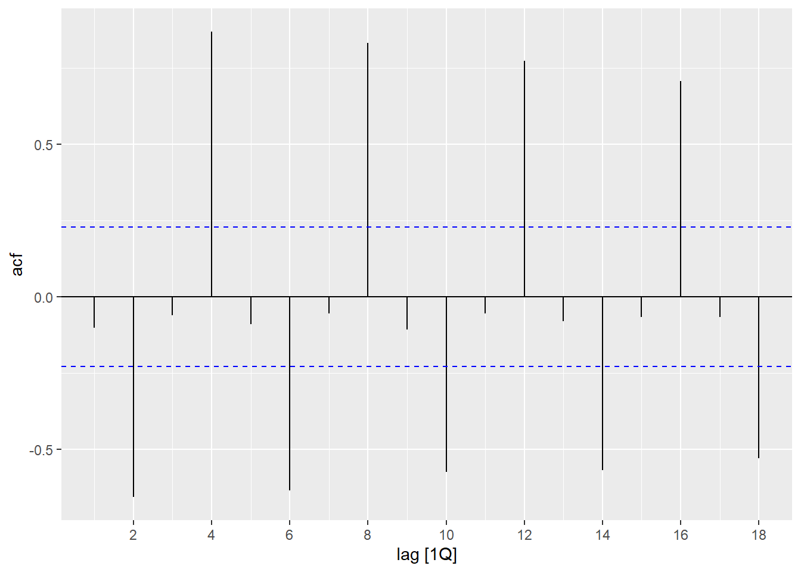
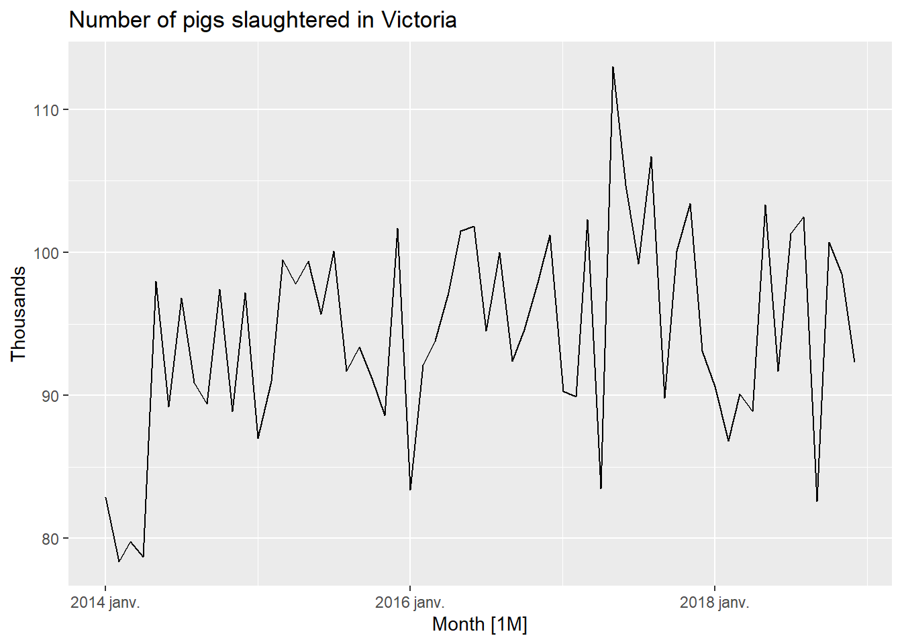
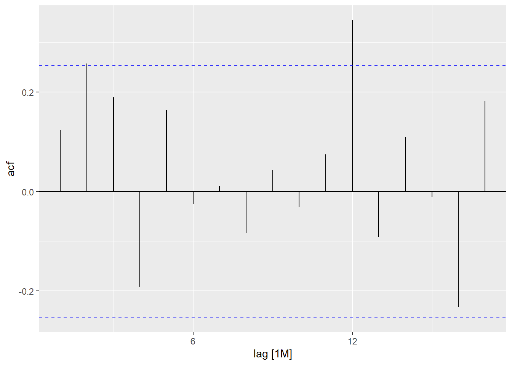
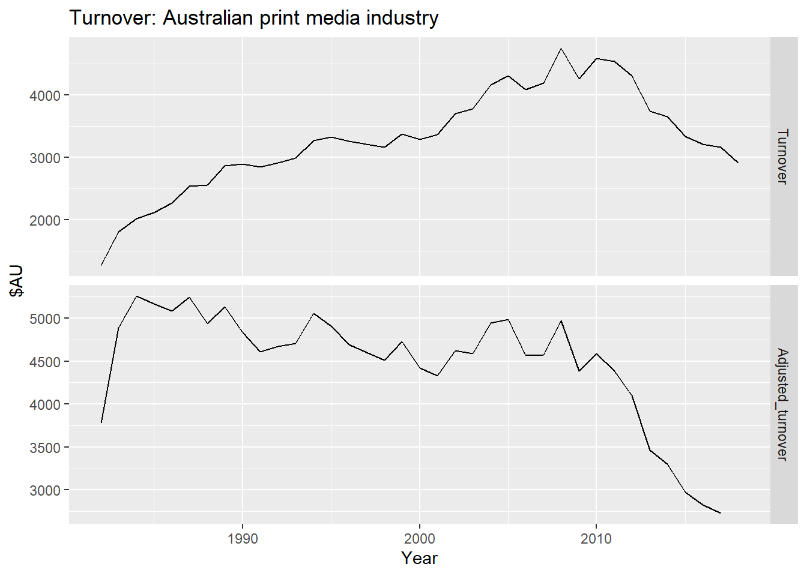
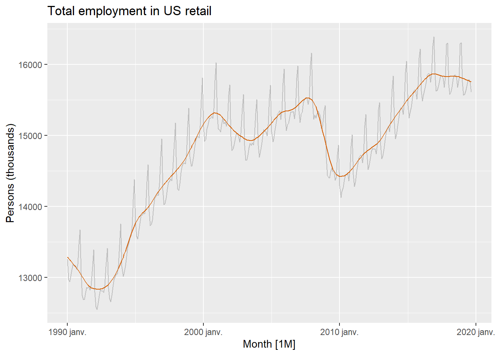
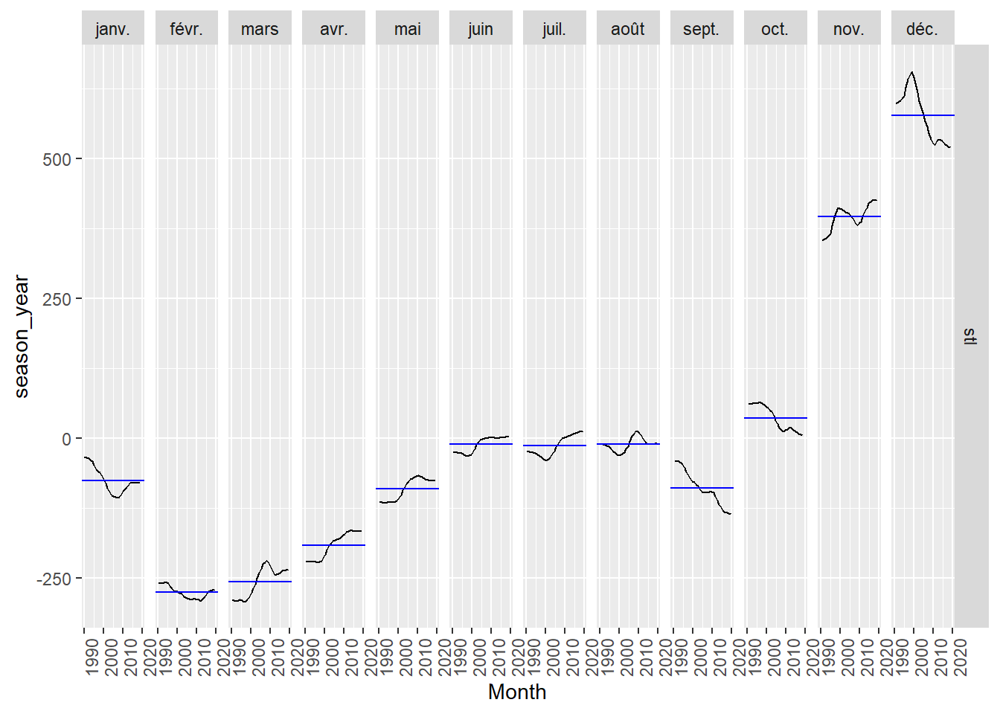
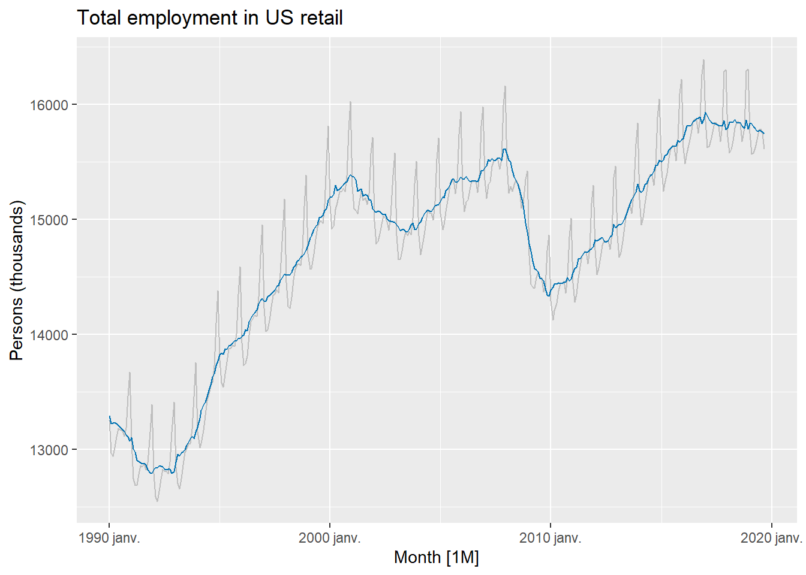
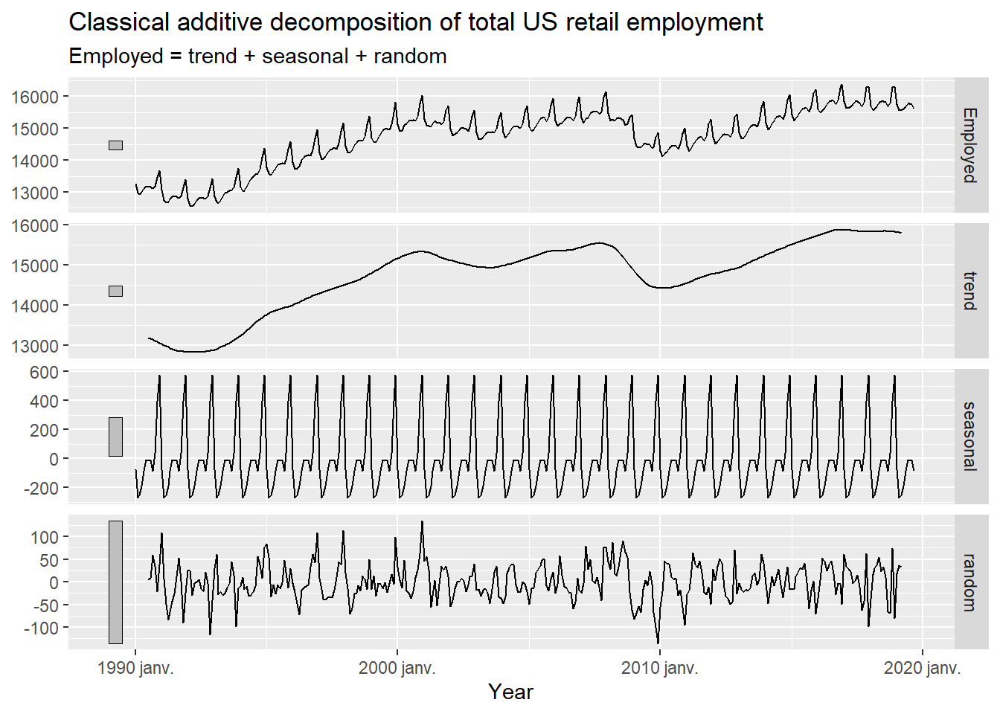
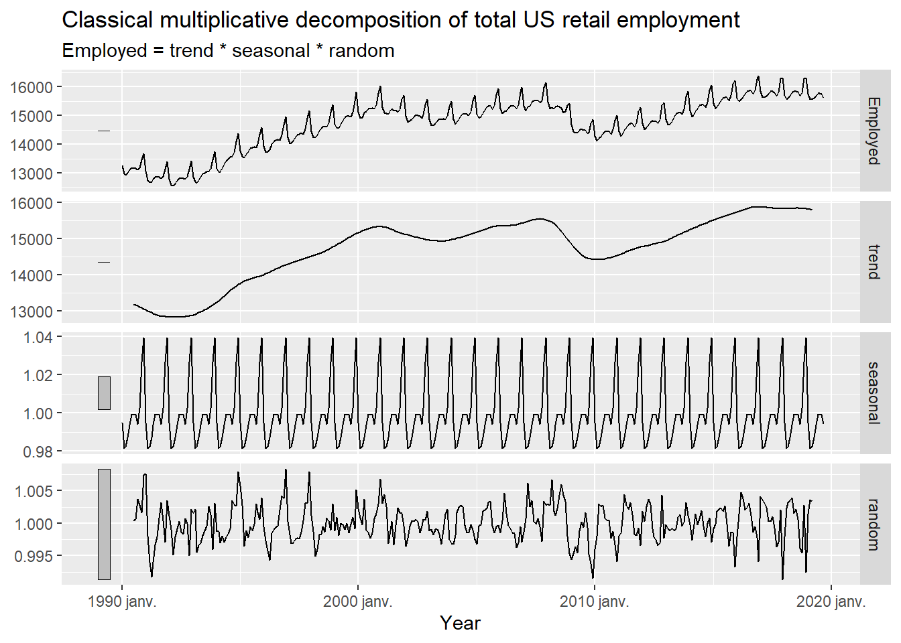
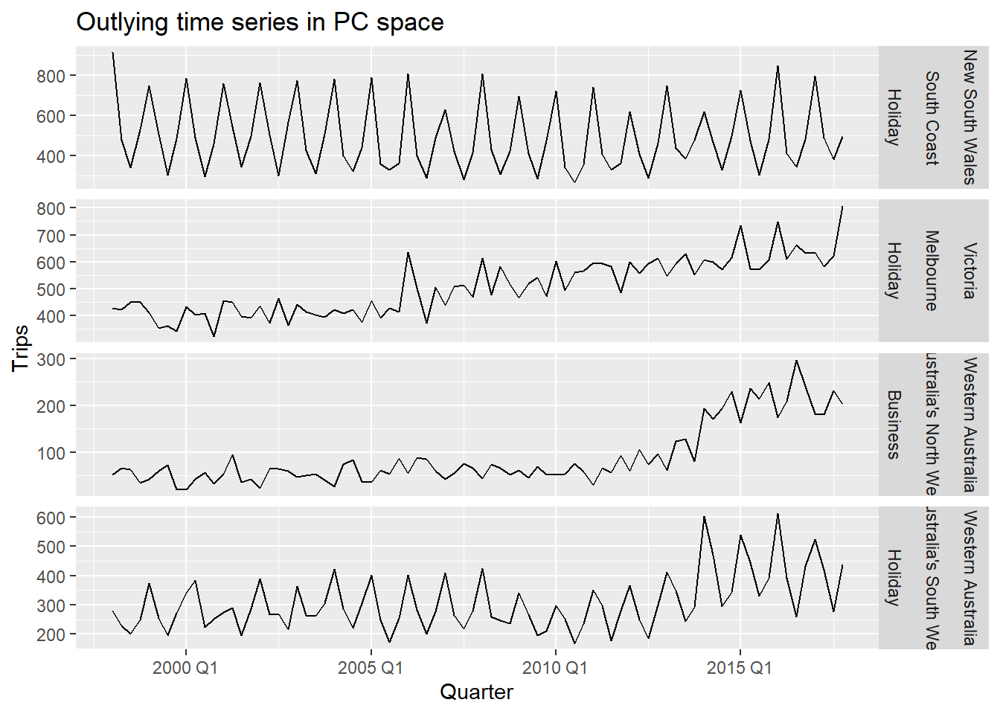

Forecasting is about predicting the future as accurately as possible, given all of the information available, including historical data and knowledge of any future events that might impact the forecasts.
Goals are what you would like to happen. Goals should be linked to forecasts and plans, but this does not always occur. Too often, goals are set without any plan for how to achieve them, and no forecasts for whether they are realistic.
Planning is a response to forecasts and goals. Planning involves determining the appropriate actions that are required to make your forecasts match your goals.
Short-term forecasts are needed for the scheduling of personnel, production and transportation. As part of the scheduling process, forecasts of demand are often also required.
Medium-term forecasts are needed to determine future resource requirements, in order to purchase raw materials, hire personnel, or buy machinery and equipment.
Long-term forecasts are used in strategic planning. Such decisions must take account of market opportunities, environmental factors and internal resources.
# A tsibble: 15,150 x 9 [1Y]
# Key: Country [263]
Country Code Year GDP Growth CPI Imports Exports Population
<fct> <fct> <dbl> <dbl> <dbl> <dbl> <dbl> <dbl> <dbl>
1 Afghanistan AFG 1960 537777811. NA NA 7.02 4.13 8996351
2 Afghanistan AFG 1961 548888896. NA NA 8.10 4.45 9166764
3 Afghanistan AFG 1962 546666678. NA NA 9.35 4.88 9345868
4 Afghanistan AFG 1963 751111191. NA NA 16.9 9.17 9533954
5 Afghanistan AFG 1964 800000044. NA NA 18.1 8.89 9731361
6 Afghanistan AFG 1965 1006666638. NA NA 21.4 11.3 9938414
7 Afghanistan AFG 1966 1399999967. NA NA 18.6 8.57 10152331
8 Afghanistan AFG 1967 1673333418. NA NA 14.2 6.77 10372630
9 Afghanistan AFG 1968 1373333367. NA NA 15.2 8.90 10604346
10 Afghanistan AFG 1969 1408888922. NA NA 15.0 10.1 10854428
# ℹ 15,140 more rows
15,150 rows and 9 columns
The data are 1 year apart: [1Y]
There is a key variable, country, and 263 countries in the dataset
there are 263 separate time series
the key variable determines the different time series
An index variable is the variable that indexes the time series (e.g. year)
All the other variables are measured variables
Another example of tsibble object:
tourism
# A tsibble: 24,320 x 5 [1Q]
# Key: Region, State, Purpose [304]
Quarter Region State Purpose Trips
<qtr> <chr> <chr> <chr> <dbl>
1 1998 Q1 Adelaide South Australia Business 135.
2 1998 Q2 Adelaide South Australia Business 110.
3 1998 Q3 Adelaide South Australia Business 166.
4 1998 Q4 Adelaide South Australia Business 127.
5 1999 Q1 Adelaide South Australia Business 137.
6 1999 Q2 Adelaide South Australia Business 200.
7 1999 Q3 Adelaide South Australia Business 169.
8 1999 Q4 Adelaide South Australia Business 134.
9 2000 Q1 Adelaide South Australia Business 154.
10 2000 Q2 Adelaide South Australia Business 169.
# ℹ 24,310 more rows
A tsibble allows storage and manipulation of multiple time series in R
It contains:
An index: time information about the observation
Measured variable(s): numbers of interest
Key variable(s): optional unique identifiers for each series
Rows: 3072 Columns: 6
── Column specification ────────────────────────────────────────────────────────
Delimiter: ","
chr (4): state, gender, legal, indigenous
dbl (1): count
date (1): date
ℹ Use `spec()` to retrieve the full column specification for this data.
ℹ Specify the column types or set `show_col_types = FALSE` to quiet this message.
prison
# A tibble: 3,072 × 6
date state gender legal indigenous count
<date> <chr> <chr> <chr> <chr> <dbl>
1 2005-03-01 ACT Female Remanded ATSI 0
2 2005-03-01 ACT Female Remanded Other 2
3 2005-03-01 ACT Female Sentenced ATSI 0
4 2005-03-01 ACT Female Sentenced Other 0
5 2005-03-01 ACT Male Remanded ATSI 7
6 2005-03-01 ACT Male Remanded Other 58
7 2005-03-01 ACT Male Sentenced ATSI 0
8 2005-03-01 ACT Male Sentenced Other 0
9 2005-03-01 NSW Female Remanded ATSI 51
10 2005-03-01 NSW Female Remanded Other 131
# ℹ 3,062 more rows
# A tsibble: 312 x 4 [4Y]
# Key: Length, Sex [14]
Year Length Sex Time
<int> <int> <chr> <dbl>
1 1896 100 men 12
2 1900 100 men 11
3 1904 100 men 11
4 1908 100 men 10.8
5 1912 100 men 10.8
6 1916 100 men NA
7 1920 100 men 10.8
8 1924 100 men 10.6
9 1928 100 men 10.8
10 1932 100 men 10.3
# ℹ 302 more rows
# A tsibble: 740 x 3 [1W]
# Key: Class [3]
Week Class Passengers
<week> <chr> <dbl>
1 1989 W28 Business 1524
2 1989 W29 Business 2212
3 1989 W30 Business 1777
4 1989 W31 Business 2552
5 1989 W32 Business 1889
6 1989 W33 Business 851
7 1989 W34 Business 0
8 1989 W35 Business 0
9 1989 W36 Business 0
10 1989 W37 Business 0
# ℹ 730 more rows
melsyd_economy |>autoplot()
Plot variable not specified, automatically selected `.vars = Passengers`
pelt |>autoplot(Lynx) +labs(y ="Number trapped", title ="Annual Canadian Lynx Trappings")
Annual data does not have seasonality
2.4 Seasonal plots
a10 |>autoplot(Cost)
Seasonal plot: the data are plotted against the individual “seasons” in which the data were observed.
a10 |>gg_season(Cost, labels ="both") +labs(y ="$ million", title ="Seasonal plot: antidiabetic drug sales")
Data plotted against the individual “seasons” in which the data were observed (in this case a “season” is a month
Something like a time plot except that the data from each season are overlapped
Enables the underlying seasonal pattern to be seen more clearly, and also allows any substantial departures from the seasonal pattern to be easily identified.
Together, the autocorrelations at lags 1, 2, …, make up the autocorrelation or ACF.
The plot is known as a correlogram
new_production |>ACF(Beer) |>autoplot()

\(r_4\) is higher than for the other lags due to the seasonal pattern in the data: peaks tend to be 4 quarters apart and troughs tend to be 4 quarters apart.
\(r_2\) is more negative than for the other lags because troughs tend to be 2 quarters behind peaks.
When data have a trend, the autocorrelations for small lags tend to be large and positive (because observations nearby in time are also nearby in value)
When data are seasonal, the autocorrelations will be larger at the seasonal lags (i.e. at multiples of the seasonal frequency)
When data are trended and seasonal, you see a combination of these effects
Sampling distribution of \(r_k\) for white noise data is asymptotically \(N(0,1/T)\)
95% of all \(r_k\) for white noise must lie within \(\pm1.96/\sqrt{T}\)
If this is not the case, the series is probably not white noise
Common to plot lines at \(\pm1.96/\sqrt{T}\) when plotting ACF. These are the critical values
pigs <- aus_livestock |>filter(State =="Victoria", Animal =="Pigs", year(Month) >=2014)pigs |>autoplot(Count /1e3) +labs(y ="Thousands", title ="Number of pigs slaughtered in Victoria")

pigs |>ACF(Count) |>autoplot()

Difficult to detect pattern in time plot
ACF shows significant autocorrelation for lags 2 and 12
Indicates some slight seasonality
These show the series is not a white noise series.
2.10 Exercises
2.11 Further reading
Chapter 3 - Time series decomposition
3 types of time series patterns: trend, seasonality and cycles.
When we decompose a time series into components, we usually combine the trend and cycle into a single trend-cycle component (often just called the trend for simplicity). Thus we can think of a time series as comprising three components:
a trend-cycle component
a seasonal component
a remainder component
For some time series (e.g. those that are observed at least daily), there can be more than one seasonal component, corresponding to the different seasonal periods.
print_retail <- aus_retail |>filter(Industry =="Newspaper and book retailing") |>group_by(Industry) |>index_by(Year =year(Month)) |>summarise(Turnover =sum(Turnover))aus_economy <- global_economy |>filter(Code =="AUS")print_retail |>left_join(aus_economy, by ="Year") |>mutate(Adjusted_turnover = Turnover / CPI *100) |>pivot_longer(c(Turnover, Adjusted_turnover),values_to ="Turnover") |>mutate(name =factor(name, levels =c("Turnover", "Adjusted_turnover"))) |>ggplot(aes(x = Year, y = Turnover)) +geom_line() +facet_grid(name ~ ., scales ="free_y") +labs(title ="Turnover: Australian print media industry", y ="$AU")
Warning: Removed 1 row containing missing values or values outside the scale range
(`geom_line()`).

Mathematical transformations
If the data show different variations at different levels of the series, then a transformation can be useful.
Denote original observations as \(y_1, ..., y_T\) and transformed observations as \(w_1, ..., w_T\).
Square root
\(w_t=\sqrt{y_t}\)
⬊
Cube root
\(w_t=\sqrt[3]{y_t}\)
increasing
Logarithm
\(w_t=log(y_t)\)
strength
Logarithms, in particular, are useful because they are more interpretable: changes in a log value are relative (percent) changes on the original scale.
us_retail_employment |>autoplot(Employed, color ="gray") +autolayer(components(dcmp), trend, color ="#D55E00") +labs(y ="Persons (thousands)",title ="Total employment in US retail")

components(dcmp) |>gg_subseries(season_year)

Useful by-product of decomposition: an easy way to calculate seasonally adjusted data
Additive decomposition: seasonally adjusted data given by
\[
y_t-S_t=T_t+R_t
\]
Multiplicative decomposition: seasonally adjusted data given by
\[
y_t/S_t=T_t \times R_t
\]
us_retail_employment |>autoplot(Employed, color ="gray") +autolayer(components(dcmp), season_adjust, color ="#0072B2") +labs(y ="Persons (thousands)",title ="Total employment in US retail")

We use estimates of \(S\) based on past values to seasonally adjust a current value
Seasonally adjusted series reflect remainders as well as trend. Therefore they are not “smooth” and “downturns” or “upturns” can be misleading
It is better to use the trend-cycle component to look for turning points
3.3 Moving averages
The simplest estimate of the trend-cycle uses moving averages
# A tsibble: 10 x 4 [1Y]
# Key: Country [1]
Country Year Exports `5-MA`
<fct> <dbl> <dbl> <dbl>
1 Australia 1960 13.0 NA
2 Australia 1961 12.4 NA
3 Australia 1962 13.9 13.5
4 Australia 1963 13.0 13.5
5 Australia 1964 14.9 13.6
6 Australia 2013 20.0 20.8
7 Australia 2014 21.1 20.4
8 Australia 2015 20.0 20.3
9 Australia 2016 19.3 NA
10 Australia 2017 21.3 NA
aus_exports |>autoplot(Exports) +geom_line(aes(y =`5-MA`), colour ="#D55E00") +labs(y ="% of GDP",title ="Total Australian exports: 5-MA")
Warning: Removed 4 rows containing missing values or values outside the scale range
(`geom_line()`).
Choose additive or multiplicative depending on which gives the most stable components
For multiplicative models, this method of estimation is known as ratio-to-moving-average method.
us_retail_employment |>model(classical_decomposition(Employed, type ="additive") ) |>components() |>autoplot() +labs(title ="Classical additive decomposition of total US retail employment", x ="Year")
Warning: Removed 6 rows containing missing values or values outside the scale range
(`geom_line()`).

us_retail_employment |>model(classical_decomposition(Employed, type ="multiplicative") ) |>components() |>autoplot() +labs(title ="Classical multiplicative decomposition of total US retail employment", x ="Year")
Warning: Removed 6 rows containing missing values or values outside the scale range
(`geom_line()`).

Comments on classical decomposition:
Estimate of trend is unavailable for first few and last few observations
Seasonal component repeats from year to year. May not be realistic
Not robust to outliers
Newer methods designed to overcome these problems.
3.5 Methods used by official statistics agencies
History of time series decomposition
Classical methods originated in the 1920s
Census II method introduced in 1957. Basis for X-11 method and variants (including X-12-ARIMA, X-13-ARIMA)
# A tibble: 304 × 4
Region State Purpose mean
<chr> <chr> <chr> <dbl>
1 Kangaroo Island South Australia Other 0.340
2 MacDonnell Northern Territory Other 0.449
3 Wilderness West Tasmania Other 0.478
4 Barkly Northern Territory Other 0.632
5 Clare Valley South Australia Other 0.898
6 Barossa South Australia Other 1.02
7 Kakadu Arnhem Northern Territory Other 1.04
8 Lasseter Northern Territory Other 1.14
9 Wimmera Victoria Other 1.15
10 MacDonnell Northern Territory Visiting 1.18
# ℹ 294 more rows
tourism |>features(Trips, quantile)
# A tibble: 304 × 8
Region State Purpose `0%` `25%` `50%` `75%` `100%`
<chr> <chr> <chr> <dbl> <dbl> <dbl> <dbl> <dbl>
1 Adelaide South Australia Busine… 68.7 134. 153. 177. 242.
2 Adelaide South Australia Holiday 108. 135. 154. 172. 224.
3 Adelaide South Australia Other 25.9 43.9 53.8 62.5 107.
4 Adelaide South Australia Visiti… 137. 179. 206. 229. 270.
5 Adelaide Hills South Australia Busine… 0 0 1.26 3.92 28.6
6 Adelaide Hills South Australia Holiday 0 5.77 8.52 14.1 35.8
7 Adelaide Hills South Australia Other 0 0 0.908 2.09 8.95
8 Adelaide Hills South Australia Visiti… 0.778 8.91 12.2 16.8 81.1
9 Alice Springs Northern Territo… Busine… 1.01 9.13 13.3 18.5 34.1
10 Alice Springs Northern Territo… Holiday 2.81 16.9 31.5 44.8 76.5
# ℹ 294 more rows
4.2 ACF features
The sum of the first ten squared autocorrelation coefficients is a useful summary of how much autocorrelation there is in a series, regardless of lag.
We can also compute autocorrelations of the changes in the series between periods: we “difference” the data and create a new time series consisting of the differences between consecutive observations. Then we can compute the autocorrelations of this new differenced series.
The feat_acf() function computes a selection of autocorrelations:
the first autocorrelation coefficient from the original data
the sum of squares of the first ten autocorrelation coefficients from the original data
the first autocorrelation coefficient from the differenced data
the sum of squares of the first ten autocorrelation coefficients from the differenced data
the first autocorrelation coefficient from the twice differenced data
the sum of squares of the first ten autocorrelation coefficients from the twice differenced data
for seasonal data, the autocorrelation coefficient at the first seasonal lag is also returned
For strongly trended data, the seasonally adjusted data should have much more variation than the remainder component. Therefore, \(Var(R_t)/(Var(T_t+S_t)\) should be relatively small.
But for data with little or no trend, the two variances should be approximately the same. So we define the strength of trend as:
\[
F_T=max(0,1-\frac{Var(R_t)}{Var(T_t+S_t})
\]
The strength of seasonality is defined similarly, but with respect to the detrended data rather than the seasonally adjusted data:
`stat_bin()` using `bins = 30`. Pick better value with `binwidth`.
`stat_bin()` using `bins = 30`. Pick better value with `binwidth`.
`stat_bin()` using `bins = 30`. Pick better value with `binwidth`.
`stat_bin()` using `bins = 30`. Pick better value with `binwidth`.
`stat_bin()` using `bins = 30`. Pick better value with `binwidth`.
`stat_bin()` using `bins = 30`. Pick better value with `binwidth`.
`stat_bin()` using `bins = 30`. Pick better value with `binwidth`.
`stat_bin()` using `bins = 30`. Pick better value with `binwidth`.
`stat_bin()` using `bins = 30`. Pick better value with `binwidth`.
We can compute the principal components of the tourism features:
# A tibble: 4 × 5
Region State Purpose .fittedPC1 .fittedPC2
<chr> <chr> <chr> <dbl> <dbl>
1 Australia's North West Western Australia Business 13.4 -11.3
2 Australia's South West Western Australia Holiday 10.9 0.880
3 Melbourne Victoria Holiday 12.3 -10.4
4 South Coast New South Wales Holiday 11.9 9.42
#> # A tibble: 4 × 5#> Region State Purpose .fittedPC1 .fittedPC2#> <chr> <chr> <chr> <dbl> <dbl>#> 1 Australia's North West Western Australia Business 13.4 -11.3 #> 2 Australia's South West Western Australia Holiday 10.9 0.880#> 3 Melbourne Victoria Holiday 12.3 -10.4 #> 4 South Coast New South Wales Holiday 11.9 9.42outliers |>left_join(tourism, by =c("State", "Region", "Purpose"), multiple ="all") |>mutate(Series =glue("{State}", "{Region}", "{Purpose}", .sep ="\n\n")) |>ggplot(aes(x = Quarter, y = Trips)) +geom_line() +facet_grid(Series ~ ., scales ="free") +labs(title ="Outlying time series in PC space")

Chapter 5 - The forecaster’s toolbox
5.1 A tidy forecasting workflow
The process of producing forecasts can be split up into a few fundamental steps:
augment(fit) |>autoplot(.resid) +labs(y ="$US",title ="Residuals from naïve method")
Warning: Removed 1 row containing missing values or values outside the scale range
(`geom_line()`).
augment(fit) |>ggplot(aes(x = .resid)) +geom_histogram(bins =150) +labs(title ="Histogram of residuals")
Warning: Removed 1 row containing non-finite outside the scale range
(`stat_bin()`).
augment(fit) |>ACF(.resid) |>autoplot() +labs(title ="ACF of residuals")
gg_tsresiduals(fit)
Warning: Removed 1 row containing missing values or values outside the scale range
(`geom_line()`).
Warning: Removed 1 row containing missing values or values outside the scale range
(`geom_point()`).
Warning: Removed 1 row containing non-finite outside the scale range
(`stat_bin()`).
ACF of residuals
We assume that the residuals are white noise (uncorrelated, mean zero, constant variance). If they aren’t, then there is information left in the residuals that should be used in computing forecasts.
So a standard residual diagnostic is to check the ACF of the residuals of a forecasting method.
We expect these to look like white noise.
Portmanteau tests
\(r_k\)=autocorrelation of residual at lag \(k\)
Consider a whole set of \(r_k\) values, and develop a test to see whether the set is significantly different from a zero test.
Box-Pierce test :
\[
Q=T\sum_{k=1}^lr_k^2
\]
where \(l\) is max lag being considered and \(T\) is number of observations.
if each \(r_k\) close to 0, \(Q\) will be small
if some \(r_k\) values large (positive or negative), \(Q\) will be large
Ljung-Box test :
\[
Q^*=T(T+2)\sum_{k=1}^l(T-k)^{-1}r_k^2
\]
where \(k\) is max lag being considered and \(T\) is number of observations.
my preferences: \(l\)=10 for non-seasonal data, \(l\)=2m for seasonal data (where \(m\) is seasonal period)
better performance, especially in small samples
if data were white noise, \(Q^*\) has a \(\chi^2\) distribution with \(l\) degrees of freedom
lag = \(l\)
augment(fit) |>features(.resid, ljung_box, lag =10)
# A tibble: 1 × 4
Symbol .model lb_stat lb_pvalue
<chr> <chr> <dbl> <dbl>
1 FB NAIVE(Close) 12.1 0.276
If pval < 0.05, we reject the white noise hypothesis.
In our case, we accept the hypothesis that the residuals are not easily distinguished from white noise.
5.5 Distributional forecasts and prediction intervals
A forecast \(\hat{y}_{T+h|T}\) is (usually) the mean of the conditional distribution \(y_{T+h}|y_1,...,y_T\).
Most time series models produce normally distributed forecasts.
The forecast distribution describes the probability of observing any future value.
Assuming residuals are normal, uncorrelated, \(sd=\hat{\sigma}\):
Note that when \(h=1\) and \(T\) is large, these all give the same approximate forecast variance: \(\hat{\sigma}^2\).
A prediction interval gives a region within which we expect \(y_{T+h}\) to lie with a specified probability
Assuming forecast errors are normally distributed, then a 95% PI is \(\hat{y}_{T+h|T} \pm 1.96\hat{\sigma}_h\) where \(\hat{\sigma}_h\) is the st dev of the h-step distribution
When h=1, \(\hat{\sigma}_h\) can be estimated from the residuals
Natural logarithm, particularly useful because they are more interpretable: changes in a log value are relative (percent) changes on the original scale.
We must reverse the transformation or back-transform to obtain forecasts on the original scale. The reverse Box-Cox transformations are given by: